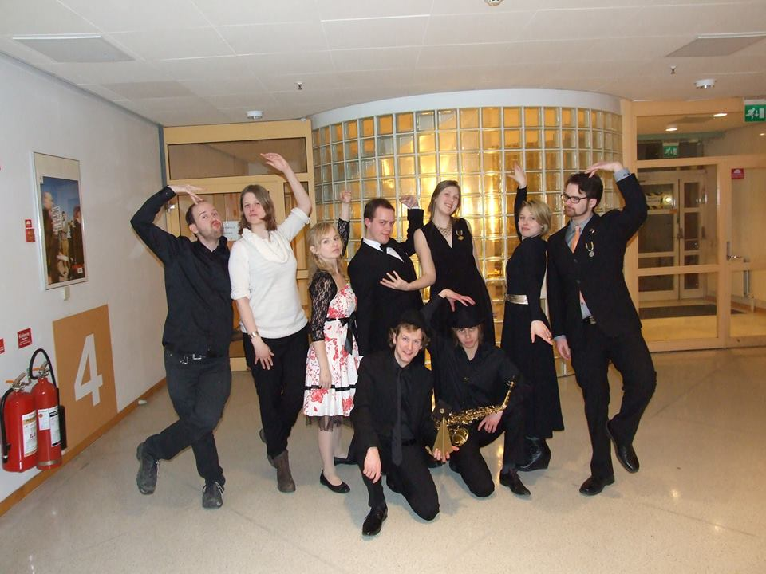
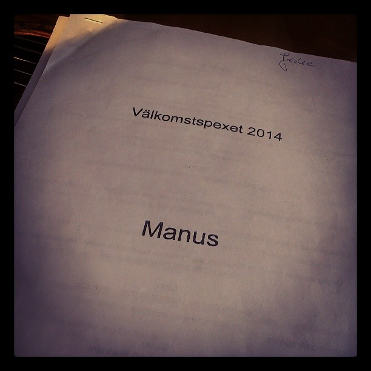
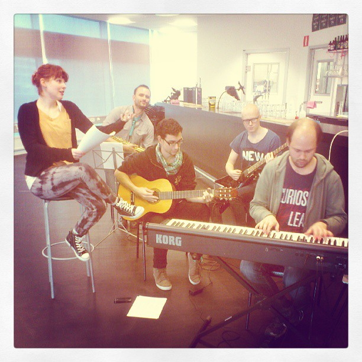
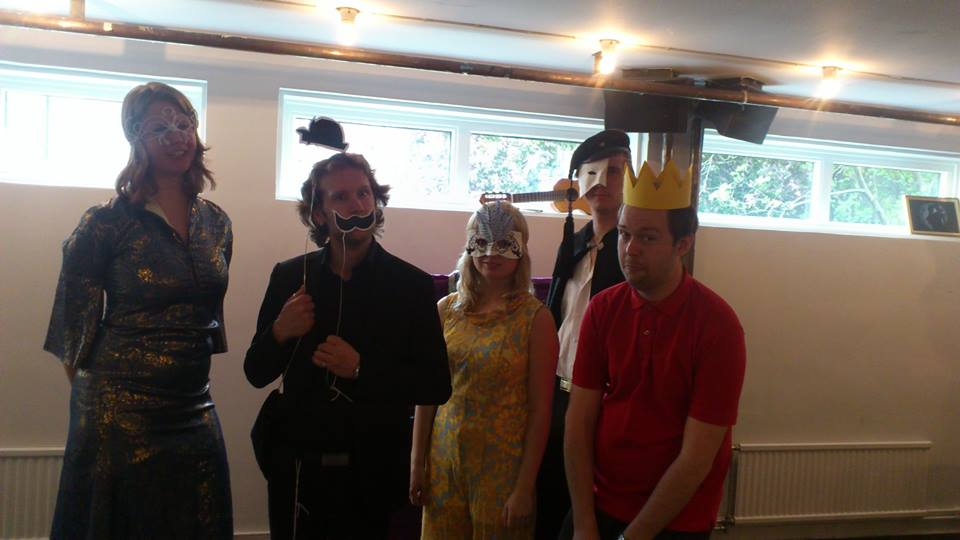

Musikaliska och Estetiska Sektionen, i vardagligt tal refererat till som MES, grundades 2011 av människor som tyckte att det sjöngs, uppträddes och i allmänhet skapades alldeles för lite i studentkåren DISK.

MES formas till 100 procent av medlemmarnas egna intressen så alla som sysslar med någon form av kreativt skapande är varmt välkomna till oss. Genom åren har vi arrangerat improvisationskurser, jamkvällar, danskvällar, systugor, filmvisning, Eurovison-event och mycket mer.
 De senaste åren har vi haft den stora äran att underhålla på kårens finaste fester: födelsedagsfesten Ratatosk och välkomstmiddagen som är insparksperiodens höjdpunkt.
Vi arbetar även för att bygga upp en riktig spextradition i Kista, något som är ganska unikt på Stockholms Universitet. Hösten 2014 nådde vi en viktig milstolpe i det arbetet när vi satte upp det allra första Kistaspexet någonsin: Lunarstorm Rising.
Vår motto är Avis rara optime cantat (Sällsynt fågel sjunger bäst)